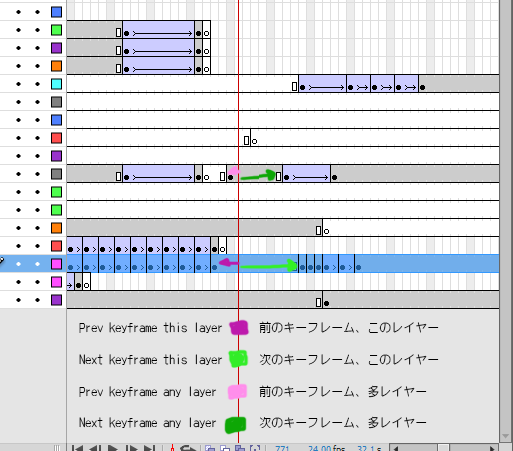

These commands quickly move the playhead to the next or previous keyframe.
 Prev Keyframe
Prev Keyframe
 Next Keyframe
Next Keyframe
 Prev Keyframe (Any layer)
Prev Keyframe (Any layer)
 Next Keyframe (Any layer)
Next Keyframe (Any layer)
These timeline commands were written by Todd Slaughter in 2012, and graciously made public in this thread. I have included them in my AniCommand user interface panel for convenience.
Known issue: Sometimes these commands stop working after a while of working on a scene.
Workaround: Save the file, and the commands will start working again.